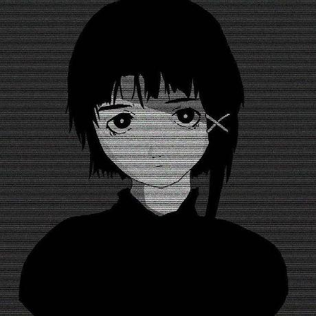

¡Hola! Soy 74lg0

Me presento, mi apodo es Zalgo (74lg0)
Me dedico a la programacion desde hace casi 3 años.
Mis lenguajes favoritos son:
-
 Python
Python
-
 C++
C++
-
 JavaScript
JavaScript
Mis pasatiempos favoritos son la programación de herramientas de pentesting, las matemáticas (aunque no soy tan bueno 😅), el Machine Learning (Aprendiendo) y la lectura.
Tengo bastantes libros, la mayoría ya los he leído, pero todavía hay algunos que no.
Entre mis libros favoritos encontramos a:
- Nexus - Yuval Noah Harari
- Así hablaba Zaratustra - Friedrich Nietzsche
- Boulevar - Flor M. Salvador
- Coraline - Neil Gaiman
- Sapiens - Yuval Noah Harari
Ademas de eso mis canciones favoritas las encuentras en el reproductor (aqui arriba).
Mis artistas favoritos incluyen
☄️✨Y sobre todo mis artistas favoritos ✨☄️